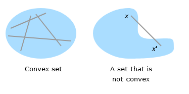

(Mat) Lista de Exercícios Unidade 2
Sugestões de referências para estudo
- (Nicholson and Snyder 2017) cap 3, 4, 9
- (Hoy et al. 2011) cap 11
- (Chiang and Wainwright 2006) cap 8, 9, 11, 12
- (Guidorizzi 2008) cap 8, 10, 11
- Mathematical methods for economic theory (Martin Osborne)
Questões marcadas com
- (*): São aplicações diretas de técnicas matemáticas.
- (**): Envolvem a interação de conceitos econômicos e métodos matemáticos. Podem ser aplicações matemáticas diretas mais trabalhosas.
- (***): Exercícios mais elaborados com o objetivo de introduzir conceitos mais avançados.
Os trechos ao longo deste texto são lembretes (…) e não substituem, de forma alguma, a leitura das referências indicadas.
Funções reais de múltiplas variáveis reais
Exercise 1 (*) Seja \(f(x,y)=3x+2y\). Calcule
- \(f(1,-1)\)
- \(f(a,x)\)
- \(\lim_{h\rightarrow 0}\frac{f(x+h,y)-f(x,y)}{h}\)
- \(\lim_{h\rightarrow 0}\frac{f(x,y+h)-f(x,y)}{h}\)
Exercise 2 (*) Responda ao que se pede.
- Seja \(f(x,y)=xy\), obtenha 3 diferentes pares \((x_j,y_j)\) tais que \(f(x,y)=2\).
- Seja \(g(x,y)=\exp(-x^2/2+y^2/2)\), obtenha 3 diferentes pares \((x_j,y_j)\) tais que \(g(x,y)=1/2\).
Exercise 3 (*) Represente graficamente o domínio da função \(z=f(x,y)\) dada por
- \(x+y-1+z^2=0\), \(z\geq0\)
- \(f(x,y)=\frac{x-y}{\sqrt{1-x^2-y^2}}\)
- \(z=\sqrt{y-x^2}+\sqrt{2x-y}\)
- \(z=\log(2x^2+y^2-1)\)
- \(z^2+4 = x^2+y^2\), \(z\geq0\)
- \(z = \sqrt{|x|+|y|}\)
- \(4x^2+y^2+z^2=1\), \(z\leq0\)
- \(z = \frac{x-y}{\sin x - \sin y}\)
Curvas de nível
Exercise 4 (Curvas de nível 1) (*) Desenhe as curvas de nível e esboce o gráfico.
- \(f(x,y)=1-x^2-y^2\)
Fazemos \(f(x,y)=k\) e interpretamos a curva obtida. \[ \begin{align*}k = 1-x^2-y^2 \\ y^2+x^2=1-k\end{align*}\] As curvas de nível são círculos com centro em \((x,y)=0\) e raio \(\sqrt{1-k}\). Ver figura no link.
- \(f(x,y)=\sqrt{xy}\)
\[\begin{align*} k = \sqrt{xy}\\ k^2 = xy \\ y = \frac{k^2}{x} \\ y = (k^2)\frac{1}{x} \end{align*}\] As curvas de nível são múltiplos não negativos de uma hipérbole retangular. Ver figura no link.
- \(z(x,y)=\min(x,y)\)
- \(g(x,y)=\max(x,y)\)
- \(h(x,y)=x^2+y^2\)
- \(f(x,y)=\exp(x^2+y^2)\)
Funções Homogêneas
Uma função \(f:A\rightarrow\mathbb R, A\subseteq R^2\), denomina-se função homogênea de grau \(k\) se \[\begin{align*} f(tx,ty)=t^k f(x,y), \end{align*}\] para todo \(t>0\) e \((x,y)\in A\) tais que \((tx,ty)\in A\).
Exercise 5 (Funções homogêneas 1) Classifique as funções abaixo como homogêneas ou não homogêneas. Em caso positivo, determine o grau de homogeneidade.
- \(f(x,y)=xy\)
- \(f(x,y)=x(1+y)\)
- \(f(x,y)=\sqrt{xy}\)
- \(f(x,y)=x^\alpha y^\beta\)
- \(f(x,y)=\frac{x^3-2xy^2}{x^3-y^3}\)
- \(f(x,y)=\sqrt{x^4+y^4}\)
- \(f(x,y)=5x^3y + x^4 + 3\)
- \(f(x,y)=\frac{2}{x^2+y^2}\)
Seja \(h:A\rightarrow\mathbb R\), com \(A\subseteq \mathbb R^2\) uma função de duas variáveis reais a valores reais homogênea de grau \(k\).
Tome \(\phi: I\rightarrow \mathbb R\) com \(Im(h)\subseteq I\) uma função monotônica de uma variável real.
Dizemos que \(g(x,y)\) é uma função homotética se pode ser escrita como \[ g(x,y) = \phi(h(x,y)). \] (Funções homotéticas são de interesse porque preservam várias propriedades desejáveis de funções homogêneas.)
Exercise 6 (Funções homotéticas 1) As funções abaixo são homotéticas e podem ser escritas como \(g(x,y)=\phi(h(x,y))\). Identifique qual é a função homogênea \(h(x,y)\) e a função monotônica \(\phi(z)\).
Exercise 7 Uma função homotética é uma transformação monotônica de uma função homogênea. Uma propriedade importante de funções homotéticas é que suas curvas de nível têm a mesma forma das curvas de nível da função homogênea original.
Obtenha as curvas de nível para os pares de funções abaixo. Mostre que têm a mesma forma.
Derivadas parciais
\[ \frac{\partial f(x,y)}{\partial x} = \lim_{h\rightarrow 0}\frac{f(x+h,y)-f(x,y)}{h} \] Escreveremos \(f_x \equiv \frac{\partial f(x,y)}{\partial x}\) como uma notação mais compacta para a derivada parcial de \(f\) com relação a \(x\).
Exercise 8 (Derivadas parciais 1) (*) Definimos o vetor gradiente de uma função multivariada \(f:A\rightarrow \mathbb R, A\subseteq \mathbb R^n\) como \[ \nabla f(x_1,\dots,x_n) = \begin{bmatrix} \frac{\partial f}{\partial x_1} \\ \frac{\partial f}{\partial x_2} \\ \vdots \\ \frac{\partial f}{\partial x_n} \end{bmatrix}.\] Obtenha o vetor gradiente das funções abaixo
- \(f(x,y) = \sqrt{x}+y\)
- \(f(x,y,z) = e^{2xyz}\)
- \(F(K,L) = (AK)^\alpha L^{1-\alpha}\)
- \(f(x,y)=\exp(x^3+y^2)\)
- \(u(x_1,x_2)=\left(x_1^\delta + x_2^\delta\right)^{1/\delta}\)
- \(f(x,y) = (a\log(x)+b\log(y))^2\)
- \(SSR(\beta_0,\beta_1) = \sum^n_{j=1}(y_j-\beta_0-\beta_1x_j)^2\)
- (***) \(SSR(b_1,b_2,\dots,b_p) = (\mathbf y -X\mathbf b)^T(\mathbf y-X\mathbf b)\), onde \(\mathbf y\) é um vetor \(n\times 1\) e \(X\) é uma matriz \(n\times p\).
A notação \(\frac{\partial f(x,y)}{\partial x}\), como vimos, indica a derivada de relação a \(x\), onde \(y\) é olhado como constante, ou seja, como independente de \(x\). Por outro lado, a notação \(\frac{d}{dx}[f(x,y)]\) indica a derivada de \(f(x,y)\), onde \(y\) deve ser olhado (quando nada for dito em contrário) como função de \(x\).
Exemplo 4. \(\frac{\partial}{\partial x}(x^2+y^2)=2x\), enquanto \[ \frac{d}{dx}(x^2+y^2)=2x+\frac{d}{dx}(y^2)=2x+2y\frac{dy}{dx}\] pois, \[ \frac{d}{dx}(y^2)=\frac{d}{dy}(y^2)\frac{dy}{dx}. \]
Exercise 9 Hoy p406-407 exercícios 1-12
Exercise 10 Hoy p414-415 exercícios 1-9
Taxa marginal de substituição (MRS)
Dada uma função de utilidade \(u(x,y)\), a taxa marginal de substituição MRS (marginal rate of substitution) do bem \(y\) pelo bem \(x\) é definida como: a quantidade do bem \(x\) que seria trocada por uma unidade do bem \(y\), mantendo o nível de utilidade constante. Ou seja, \[ \begin{align*} MRS(y,x) = -\frac{dy}{dx}\Big|_{u(x,y)=\bar u} \end{align*} \]
Os seguintes resultados serão úteis no cálculo da taxa marginal de substituição.
Seja \(z=f(x,y)\) contínua definida em um conjunto aberto \(S\subseteq \mathbb R^2\). Defina \(dx\) e \(dy\) como mudanças nas variáveis \(x\) e \(y\). Se as derivadas parciais \(f_x\) e \(f_y\) existirem, então o diferencial total de \(z\) com relação a \(x\) e \(y\) é definido como \[ dz = f_x(x,y)dx + f_y(x,y)dy \] Sugestão de referência (Chiang and Wainwright 2006) cap 8.
Exercise 11 (Diferencial total 1) (*) Calcule o diferencial total de primeira ordem.
- \(f(x_1,x_2) = 30\log(x_1x_2)\)
- \(z = 3x^2+xy-2y^3\)
\[dz = \frac{\partial z}{\partial x}dx + \frac{\partial z}{\partial y}dy\] \[\frac{\partial z}{\partial x}=6x+y, \quad \frac{\partial z}{\partial y}=x-6y^2\] \[ dz = (6x+y)dx+(x-6y^2)dy \]
- \(U = 2x_1+9x_1x_2+x_2^2\)
- \(y=\frac{x_1}{x_1+x_2}\)
- \(y=\frac{2x_1x_2}{x_1+x_2}\)
- \(U=-5x^3-12xy-6y^5\)
- \(U=7x^2y^3\)
- \(U=3x^3(8x-7y)\)
- \(U=(5x^2+7y)(2x-4y^3)\)
- \(U=\frac{9y^3}{x-y}\)
- \(U=(x-3y)^3\)
Seja \(z=z(x,y)\) uma função com duas variáveis continuamente diferenciável.
Tome a curva de nível \(z(x,y)=\bar z\) como função implícita1 de \(x\) e \(y\).
Então
\[\begin{align*} \frac{dy}{dx}\Big|_{z(x,y)=\bar z} = -\frac{\frac{\partial z(x,y)}{\partial x}}{\frac{\partial z(x,y)}{\partial y}}. \end{align*}\] ou, equivalentemente, \[ \frac{dy}{dx}\Big|_{z(x,y)=\bar z} = -\frac{z_x(x,y)}{z_y(x,y)}.\] Perceba que obtemos esse resultado imediatamente ao escrever o diferencial total de \(z\), impor \(dz=0\) e isolar \(dy/dx\).
Sugestão de referência (Chiang and Wainwright 2006) cap 8.5.
Exercise 12 (Derivada da função implícita 1) Calcule \(dy/dx\).
- \(z(x,y)=\sqrt{x+y}\)
\[\begin{align*} z_x \equiv \frac{\partial z}{\partial x} = 1\times\frac{1}{2}(x+y)^{-1/2} \\ z_y \equiv \frac{\partial z}{\partial y} = 1\times\frac{1}{2}(x+y)^{-1/2} \end{align*}\] Portanto \[\begin{align*} \frac{dy}{dx}\Big|_{z=\bar z} = -\frac{z_x}{z_y} = \frac{\frac{1}{2}(x+y)^{-1/2}}{\frac{1}{2}(x+y)^{-1/2}} = -1 \end{align*}\]
- \(z(x,y)=\sqrt{xy}\)
\[\begin{align*} z_x = \frac{y}{2}(xy)^{-1/2}, \quad z_y =\frac{x}{2}(xy)^{-1/2}\end{align*}\] Então \[\begin{align*} \frac{dy}{dx}\Big|_{z=\bar z} = -\frac{z_x}{z_y} = -\frac{y}{x} \end{align*}\]
- \(z(x,y)=\sqrt{x^2+y^2}\)
- \(z(x,y)=a\exp\left(-\frac{1}{2}(x^2+y^2)\right), a>0\)
- \(z(x,y)=ax+by\)
- \(z(x,y)=\frac{x^a}{a}+\frac{y^a}{a}\)
- \(u(x,y)=(x^\delta+y^\delta)^{1/\delta}\)
Exercise 13 (Derivada da função implícita 2) (*) Para cada \(F(x,y)=0\), use a regra da função implícita para obter \(dy/dx\).
- \(F(x,y)=2x^2+2xy+4y^3=0\)
- \(F(x,y)=12x^5-2y=0\)
- \(F(x,y)=7x^2+2xy^2+9y^4=0\)
- \(F(x,y)=6x^3-2y=0\)
Exercise 14 (Derivada da função implícita 3) (*) Para cada \(F(x,y,z)=0\) use a regra da função implícita para calcular \(\partial y/\partial x\) e \(\partial y/\partial z\):
- \(F(x,y,z)=x^2y^3+z^2+xyz=0\)
\[\frac{\partial y}{\partial x} = -\frac{F_x}{F_y}\] \[ F_x = 2xy^3+yz, \quad F_y=3x^2y^3+xz\] \[ \frac{\partial y}{\partial x} = -\frac{2xy^3+yz}{3x^2y^3+xz}\]
- \(F(x,y,z)=x^3z^2+y^3+4xyz=0\)
- \(F(x,y,z)=3x^2y^3+xz^2y^2+y^3zx^4+y^2z\)
Exercise 15 (MRS de funções homogêneas) (**) Um apelo de funções homogêneas na modelagem de escolha econômica é o fato de sua taxa marginal de substituição entre duas variáveis \((x,y)\) permanecer constante quando multiplicamos ambas as entradas \(x\) e \(y\) por um escalar \(t>0\).
Mostre que se \(u(x,y)\) é função homogênea de grau \(k\), então \(MRS(tx,ty)=MRS(x,y)\). Interprete economicamente esse resultado.
Funções de utilidade
Exercise 16 (**) Considere as seguintes funções de utilidade
- \(U(x,y)=xy\).
\[ MRS(y,x) = -\frac{dy}{dx}\Big|_{U=\bar U} =\frac{U_x}{U_y} = \frac{y}{x}\] Mas podemos escrever \[ \bar U = xy \Longleftrightarrow y = \bar U/x \] e \[ MRS(y,x) = \frac{\bar U/x}{x} = \frac{\bar U}{x^2} \] Então repare que conforme \(x\) aumenta, a \(MRS(y,x)\) decresce. Especificamente, \[ \frac{\partial MRS}{\partial x} = -2\frac{\bar U}{x^3} < 0 \] Portanto a função de utilidade \(U(x,y)=xy\) de fato apresenta MRS decrescente.
Agora vamos olhar para as utilidades marginais (as derivadas parciais da função de utilidade com relação a cada um dos bens).
\[ \begin{align*}MU_x = \frac{\partial U(x,y)}{\partial x} = y \\ MU_y = \frac{\partial U(x,y)}{\partial y} = x \end{align*}\]
Veja que \(U_{xx}=U_{yy}=0\). Portanto a utilidade incremental obtida do consumo de uma unidade a mais do bem \(x\) não depende da quantidade desse bem já presente na cesta. Ou seja, a utilidade marginal é constante.
- \(U(x,y)=x^2y^2\).
Primeiro faça os cálculos e repare que a MRS é a mesma do item (a). Isso é surpreendente?
Agora vamos olhar para as utilidades marginais. \[ \begin{align*} U_x = 2xy^2, \quad U_y = 2x^2y \end{align*} \] Tomando as derivadas segundas temos
\[ U_{xx} = 2y^2>0, \quad U_{yy} = 2x^2>0 \] Então a utilidade adicional obtida com mais uma unidade do bem \(x\) cresce conforme a quantidade \(x\) aumenta, em proporção do dobro do quadrado da quantidade do bem \(y\). Nesse contexto olhamos \(y\) como fixo, então é como se \(U_{xx} = 2a^2, a>0\). (O argumento para \(y\) é simétrico.)
- \(U(x,y)=\log(x)+\log(y)\).
Mostre que cada uma dessas apresenta MRS decrescente, mas exibem utilidade marginal constante, crescente, e decresecente, respectivamente. Discuta o significado econômico.
Exercise 17 (Utilidade Cobb-Douglas) (**) Dizemos que um consumidor tem utilidade Cobb-Douglas se suas preferências entre bens \((x,y)\) forem descritas pela relação
\[ U(x,y)=x^\alpha y^\beta. \]
- Mostre que \[ MRS(y,x) = \frac{\alpha}{\beta}\left(\frac{y}{x}\right).\]
- Esse resultado depende de se \(\alpha+\beta=1\)? Essa restrição tem algum significado na teoria da escolha do consumidor?
- Para cestas de consumo onde \(x=y\), como a MRS depende dos valores \(\alpha\) e \(\beta\)?
- Suponha que o indivíduo aufere utilidade apenas de quantidades \(x\) e \(y\) que excedem um certo valor mínimo de subsistência, dados por \(x_0\) e \(y_0\), respectivamente. Nesse caso, \[ U(x,y) = (x-x_0)^\alpha (y-y_0)^\beta.\] Obtenha a MRS. Essa função de utilidade é homotética?
Exercise 18 (Função de utilidade CES (Constant Elasticity of Substitution)) (***) A função de utilidade \[ u(x,y) = \left(x^\delta+y^\delta\right)^{1/\delta} \] Mostre que
- Se \(\delta=1\) então \(u(x,y)\) representa substitutos perfeitos.
- Se \(\delta\rightarrow 0\), \(u(x,y)\) toma a forma de uma utilidade Cobb-Douglas.
- Se \(\delta\rightarrow\infty\) então \(u(x,y)\) se aproxima de função de utilidade representando complementos perfeitos (\(u=\min(x,y)\)).
Funções de produção
Sugestão de referência: (Nicholson and Snyder 2017) c. 9
A função de produção de uma firma para um bem particular \(q\) é representada pela função \[ q = f(k,l), \] e denota o nível máximo de produção possivelmente obtido com a combinação de insumos \((k,l)\). Chamamos \(k\) de “capital” e \(l\) de “trabalho” por conveniência.
A produtividade marginal de um dado insumo é a produção adicional proporcionada ao aumentar a quantidade desse insumo particular em uma unidade, mantendo a quantidade de todos os outros insumos constantes. \[ \begin{align*}\text{Produtividade marginal do capital} = MP_k = \frac{\partial q}{\partial k}=f_k\\ \text{Produtividade marginal do trabalho} = MP_l = \frac{\partial q}{\partial l}=f_l\end{align*}\]
Ou seja, a produtividade marginal é a derivada parcial da função de produção com relação ao insumo de interesse.
É de se esperar que a produtividade marginal de um determinado insumo dependa de quanto tão insumo é usado na produção. Esse é um dos “fatos estilizados” mais estabelecidos em teoria econômica.
Por exemplo, tome uma plantação. Mais trabalho não pode ser adicionado indefinidamente (mantendo constante a quantidade de equipamentos, adubos, tamanho do terrno, etc.) sem eventualmente demonstrar algum deterioramento no incremento de produção.
Essa é uma afirmação sobre as derivadas segundas da função de produção. Eventualmente, se continuarmos aumentando a quantidade de um único insumo de produção, o incremento na produção deve começar a decrescer.
\[ \begin{align*} \frac{\partial MP_k}{\partial k} &= \frac{\partial^2f}{\partial k^2} = f_{kk} < 0, \quad \text{para k grande o suficiente;} \\ \frac{\partial MP_l}{\partial l} &= \frac{\partial^2f}{\partial l^2} = f_{ll} < 0, \quad \text{para l grande o suficiente.} \end{align*} \]
Se a função de produção é dada por \(q=f(k,l)\) e todos os insumos forem multiplicados pela mesma constante positiva \(t\) (onde \(t>1\)), então nós classificamos os retornos de escala dessa função de produção como
| Efeito sobre a Produção | Retornos de Escala | Grau de Homogeneidade |
|---|---|---|
| \(f(tk,tl)=tf(k,l)=tq\) | Constantes | \(=1\) |
| \(f(tk,tl)<tf(k,l)=tq\) | Decrescentes | \(<1\) |
| \(f(tk,tl)>tf(k,l)=tq\) | Crescentes | \(>1\) |
Obs.: O conceito de retornos de escala se interessa com o incremento de produção quando aumentamos a quantidade de todos os insumos ao mesmo tempo. Nada impede que uma mesma função de produção apresente produtividades marginais decrescentes mas retornos de escala constantes (ou até crescentes).
Exercise 19 (*) Dadas as funções de produção abaixo, calcule as produtividades marginais. Cheque se são crescentes ou decrescentes. Determine o nível de retornos de escala. Responda em função do valor de parâmetros fixos, quando pertinente.
- \(f(k,l)=k+l+2\sqrt{kl}\) ::: {.callout-caution title=“Solução” collapse=true} Produtividades marginais \[ \begin{align*} \frac{\partial f(k,l)}{\partial k} = 1 + (kl)^{-1/2} \\ \frac{\partial f(k,l)}{\partial l} = 1 + (kl)^{-1/2}\end{align*}\] Os retornos de escala são associados ao grau de homogeneidade da função de produção. Portanto, \[ \begin{align*} f(tk, tl) &= (tk) + (tl) + 2\sqrt{tktl} \\ &=tk+tl+2t\sqrt{kl}\\ &=t^1f(k,l).\end{align*}\] Então essa função de produção apresenta retornos constantes de escala.
- \(F(K,L)=K^{\alpha}(AL)^{1-\alpha}, \quad A>0\)
- \(F(K,L)=\left(K^\delta+L^\delta\right)^{1/\delta}\)
- \(f(x_1,x_2)=(x_1+3x_2)^2\)
:::
Exercise 20 (*) Uma firma uniproduto produz sujeita a uma tecnologia descrita pela função de produção \(f(x_1,x_2)=\min(x_1,3x_2)\), sendo \(x_1\geq0\) a quantidade utilizada do insumo 1 e \(x_2\geq0\) a quantidade utilizada do insumo 2. Identifique se são verdadeiras ( ) ou falsas ( ) as afirmativas abaixo a respeito dessa função.
- ( ) A produtividade marginal do insumo 1 é nula para qualquer combinação de insumos \(x_1,x_2>0\) na qual \(x_1/3<x_2\).
- ( ) A taxa técnica de substituição em combinações de insumos \(x_1,x_2>0\) nas quais \(x_1=3x_2\) é igual a 1.
- ( ) A produtividade marginal do insumo 2 em qualquer combinação de insumos \(x_1,x_2>0\) na qual \(0<3x_2<x_2\) é dada por \(\frac{\partial f(x_1,x_2)}{\partial x_2}=3\).
Exercise 21 (*) Uma firma uniproduto produz sujeita a uma tecnologia descrita pela função de produção \(f(x_1,x_2)=\log(x_1,x_2)\), sendo \(x_1>0\) a quantidade utilizada do insumo 1, com \(x_1>1\), e \(x_2>0\) a quantidade utilizada do insumo 2, com \(x_2>1\). Com base no conceito de diferencial total de primeira ordem, identifique se são verdadeiras ( ) ou falsas ( ) as afirmativas abaixo a respeito dessa função de produção.
- ( ) O diferencial total de primeira ordem é dado por \(df = \frac{30}{x_1x_2}dx_1+\frac{30}{x_1x_2}dx_2\) para qualquer combinação de insumo \((x_1,x_2)\).
- ( ) O diferencial total de primeira ordem na combinação de insumos \((6,3)\) é dado por \(df = 4dx_1+10dx_2\).
- ( ) Se a firma estiver usando inicialmente a combinação de insumos \((5,2)\) e a quantidade do insumo 1 for diminuida em 0.2 e a quantidade do insumo 2 for aumentada em 0.4, então a estimativa da variação da produção será \(df=4.8\).
Exercise 22 (*) Considere um consumidor cujas preferências sobre o conjunto consumo \(\mathbb R^2_+\) são representadas pela função de utilidade \(u(x_1,x_2)=e^{3x_1x_2}\), sendo \(x_1\) a quantidade consumida do bem 1 e \(x_2\) a quantidade consumida do bem 2 em um dado intervalo de tempo. identifique se são verdadeiras ( ) ou falsas ( ) as afirmativas abaixo a respeito dessa função de utilidade.
- ( ) O bem 1 é um bem neutro em qualquer cesta de consumo \((x_1, x_2)\in\mathbb R^2_+\) com \(x_2=0\).
- ( ) Vale o princípio da utilidade marginal decrescente em qualquer cesta de consumo com \(x_1,x_2>0\).
- ( ) A taxa marginal de substituição em qualquer cesta de consumo com \(x_1,x_2>0\) é dada por \(MRS(x_1,x_2)=x_2/x_2\).
Convexidade e concavidade
Um conjunto \(S\) formado por vetores \(n\)-dimensionais é convexo se \[ (1-\lambda)x_0 + \lambda x_1 \in S\] para todo \(x_0,x_1\in S\) e \(\lambda \in [0,1]\).
Então um conjunto é convexo se qualquer combinação convexa2 entre elementos desse conjunto também é elemento do conjunto original.
Se estivermos tratando de vetores bidimensionais, a seguinte imagem é útil.

É extremamente desejável que o domínio de uma função multivariada seja um conjunto convexo
Exercise 23 (Conjuntos convexos 1) Determine se os seguintes conjuntos são convexos.
Seja \(f:A\rightarrow \mathbb R, A\subseteq \mathbb R^2\) uma função duas vezes continuamente diferenciável. Definimos sua matriz de derivadas segundas (ou Hessiana) como \[ H = \begin{bmatrix} f_{xx} & f_{xy} \\ f_{xy} & f_{yy} \end{bmatrix} \] Repare que \(H\) é simétrica3 Isso acontece porque se \(f\) for duas vezes continuamente diferenciável a ordem com que tomamos as derivadas não importa4.
Tome uma matriz simétrica \(2\times 2\) \[ X = \begin{bmatrix}x_{11} & c\\ c & x_{22}\end{bmatrix} \] e o vetor \(2\times 1\) \[ \mathbf w = \begin{bmatrix} w_1 \\ w_2\end{bmatrix}\]. Considere o produto \[ \mathbf w^T X \mathbf w = \begin{bmatrix} w_1 & w_2\end{bmatrix}\begin{bmatrix}x_{11} & c\\ c & x_{22}\end{bmatrix}\begin{bmatrix} w_1 \\ w_2\end{bmatrix} \] Fazendo os cálculos temos \[ \mathbf w^T X \mathbf w = w_1^2x_{11}+w_2^2x_{22}+2w_1w_2c\]. Chamamos \(\mathbf w^T X \mathbf w\) de forma quadrática (pense como uma função de \(\mathbf w\), com coeficientes dados pela matriz \(X\)).
Dizemos que uma matriz \(X\) é
- positiva definida se \(\mathbf w^T X \mathbf w>0\), para todo \(\mathbf w\neq\mathbf 0\). Podemos escrever \(X>0\).
- positiva semidefinida se \(\mathbf w^T X \mathbf w\geq0\), para todo \(\mathbf w\neq\mathbf 0\). Podemos escrever \(X\geq0\).
- negativa definida se \(\mathbf w^T X \mathbf w<0\), para todo \(\mathbf w\neq\mathbf 0\). Podemos escrever \(X<0\).
- negativa semidefinida se \(\mathbf w^T X \mathbf w\leq0\), para todo \(\mathbf w\neq\mathbf 0\). Podemos escrever \(X\leq0\).
Seja \(f\) uma função de várias variáveis definida em um conjunto convexo \(A\subseteq \mathbb R^n\). Denote a Hessiana de \(f\) avaliada no ponto \(\mathbf x\) como \(H(\mathbf x)\). Então
- \(f\) é côncava se e somente se \(H\) é negativa semidefinida para todo \(\mathbf x \in A\).
- Se \(H\) é negativa definida para todo \(\mathbf x \in A\) então \(f\) é estritamente côncava.
- \(f\) é convexa
Seja \(X\) uma matriz real simétrica com dimensões \(n\times n\), e \(\lambda_1,\lambda_2,\dots,\lambda_n\) seus associados autovalores. Então
- \(X\) é positiva definida se \(\lambda_j>0\), \(j=1,\dots,n\).
- \(X\) é positiva semidefinida se \(\lambda_j\geq0\), \(j=1,\dots,n\).
- \(X\) é negativa definida se \(\lambda_j<0\), \(j=1,\dots,n\).
- \(X\) é negativa semidefinida se \(\lambda_j\leq0\), \(j=1,\dots,n\).
Os autovalores de uma matriz quadrada \(X\) são as raízes da equação polinomial \(\det(X-I\lambda)=0\). Sempre é verdade que
- A soma dos autovalores é igual ao traço5 da matriz \(X\). \(\text{tr}(X)=\lambda_1+\dots+\lambda_n\).
- O produto dos autovalores é igual ao determinante da matriz \(X\). \(\det(X)=\lambda_1\times\lambda_1\times\cdots\lambda_n\).
Quando estamos tratando de uma matriz \(2\times 2\) é relativamente direto inferir os autovalores da “soma e produto”, e a equação de segundo-grau que obtemos ao impor essas condições.
Por exemplo \[ X = \begin{bmatrix} 2 & 3 \\ 3 & 5 \end{bmatrix} \] Aqui, \(\text{tr}(X)=7\) e \(\det(X)=1\) \[\begin{align*} \lambda_1 + \lambda_2 &= 7 \\ \lambda_1\lambda_2 &= 1 \end{align*}\] Ao resolver o sistema obtemos a equação de segundo grau \[ -\lambda^2 + 7\lambda -1 = 0\] que tem raízes \[ \lambda = \frac{7\pm3\sqrt{5}}{2} \] Então \(\lambda_1 = \frac{7+3\sqrt{5}}{2}\) e \(\lambda_2 = \frac{7-3\sqrt{5}}{2}\).
Cheque que, de fato \(\lambda_1+\lambda_2=7\) e \(\lambda_1\lambda_2=1\).
Obs.: Não é impossível que uma matriz cujas entradas são números reais tenha autovalores complexos. Quando a matriz em questão é simétrica, garantimos que seus autovalores são reais.
Otimização de funções univariadas
Seja \(f:I\rightarrow\mathbb R\), com \(I\subseteq \mathbb R\) intervalo aberto, duas vezes continuamente diferenciável em seu domínio \(I\).
Uma condição necessária para que o ponto \(x^*\) seja máximo ou mínimo local é \[ \frac{df(x^*)}{dx}=0 \tag{CPO}\] Chamamos de Condição de Primeira Ordem. Aos pontos \(x_0\) nos quais \(f^\prime(x_0)=0\) damos o nome de valores estacionários, porque a variação da função é nula nesse ponto.
Se a CPO for respeitada, então as seguintes condições, baseadas no sinal da derivada segunda, são suficientes para que \(x^*\) seja extremo local.
- Se \(f^\prime(x^*)=0\) e \(f^{\prime\prime}(x^*)>0\), \(x^*\) é ponto de mínimo local. (CSO)
- Se \(f^\prime(x^*)=0\) e \(f^{\prime\prime}(x^*)<0\), \(x^*\) é ponto de máximo local. (CSO)
- Se \(f^\prime(x^*)=0\) e \(f^{\prime\prime}(x^*)=0\), \(x^*\) é ponto de inflexão. (CSO)
Chamamos de Condição de Segunda Ordem.
Exercise 24 (Gráfico de funções univariadas) Esboce o gráfico (encontre e classifique pontos críticos, e limites laterais) das seguintes funções univariadas.
- \(f(x) = x^2 - x - 1\)
- \(g(x) = \exp(-x^2/2)\)
- \(h(x) = x\log(x)\)
- \(z(x) = x\log(x^2)\)
Exercise 25 Obtenha os valores estacionários e determine se são máximos, mínimos, ou pontos de inflexão.
- \(y=0.5x^3-3x^2+6x+10\)
- \(y=x^3-3x^2+5\)
- \(y=x^4-4x^3+16x\)
- \(y=x+1/x\)
- \(y=x^3-3x-1\)
- \(y=3x^4-10x^3+6x^2+5\)
- \(y=(1-x^2)/(1+x^2)\)
- \(y=(3-x^3)^{1/2}\)
- \(y=(2-x)/(x^2+x-2)\)
- \(y=x^{0.5}e^{-0.1x}\)
Exercise 26 (*) Uma firma tem função de custo total \[ C = 0.5x^3-3x^2+6x+50 \] a vende em um mercado competitivo com preço igual a \(\$1\). Qual a quantidade ótima produzida? Qual seria a quantidade ótima se o preço fosse \(\$2\).
Otimização irrestrita
Tome \(f:A\rightarrow \mathbb R\), com \(A\subseteq \mathbb R^2\) duas vezes continuamente diferenciável em \(A\).
Uma condição necessária para que \((x^*,y^*)\) seja ponto de máximo/mínimo local de \(f\) é que suas derivadas parciais sejam ambas iguais a zero nesse ponto.
\[\begin{align*} \nabla f(x^*,y^*) = \begin{bmatrix} \frac{\partial f(x^*,y^*)}{\partial x} \\ \frac{\partial f(x^*,y^*)}{\partial y} \end{bmatrix} = \begin{bmatrix}0 \\ 0 \end{bmatrix} \tag{CPO} \end{align*}.\]
- Aula sobre condições de primeira ordem em otimização irrestrita prof. Jaylson link.
Se a CPO for satisfeita para \((x^*,y^*)\) então a condição de segunda ordem (CSO) garante que o ponto é de máximo/mínimo. Ou seja, CPO+CSO são, juntas, condições suficientes6 para que \((x^*,y^*)\) seja extremo local.
Seja \(H(x,y)\) a matriz de derivadas segundas (Hessiana) de \(f\)
\[ \begin{align*}H(x,y) = \begin{bmatrix}\frac{\partial^2 f(x,y)}{\partial x\partial x} & \frac{\partial^2 f(x,y)}{\partial y\partial x} \\ \frac{\partial^2 f(x,y)}{\partial x \partial y} & \frac{\partial^2 f(x,y)}{\partial y \partial y} \end{bmatrix}\end{align*} \]
- Se \(H(x^*,y^*)\) for positiva definida, \((x^*,y^*)\) é ponto de mínimo local. (CSO)
- Se \(H(x^*,y^*)\) for negativa definida, \((x^*,y^*)\) é ponto de máximo local. (CSO)
Ver determinação do sinal de uma matriz com base em seus autovalores.
- Aula sobre condições de segunda ordem em otimização irrestrita prof. Jaylson link.
Exercise 27 Estude com relação a máximos e mínimos locais. Compute as condições de segunda ordem.
- \(f(x,y)=x^2+3xy+4y^2-6x+2y\)
Condições de primeira ordem: \(\nabla f(x,y) = \begin{bmatrix} 0 & 0 \end{bmatrix}^T\). \[\begin{align*} \nabla f(x,y) = \begin{bmatrix} \frac{\partial f(x,y)}{\partial x} \\ \frac{\partial f(x,y)}{\partial y} \end{bmatrix}= \begin{bmatrix} 2x+3y-6 \\ 3x+8y+2 \end{bmatrix}\end{align*}\]
Portanto as condições de primeira ordem são dadas pelo sistema \[ \begin{align*} \begin{cases} 2x+3y-6&=0 \\ 3x+8y+2&=0\end{cases} \end{align*} \] Resolvendo o sistema obtemos \((x^*,y^*)=(54/7,-24/7)\).
A matriz Hessiana é dada por
\[ \begin{align*}H(x,y) = \begin{bmatrix}\frac{\partial^2 f(x,y)}{\partial x\partial x} & \frac{\partial^2 f(x,y)}{\partial y\partial x} \\ \frac{\partial^2 f(x,y)}{\partial x \partial y} & \frac{\partial^2 f(x,y)}{\partial y \partial y} \end{bmatrix} = \begin{bmatrix} 2 & 3 \\ 3 & 8 \end{bmatrix} \end{align*} \] Devemos julgar o sinal de \(H(x^*,y^*)\). Sabemos que \[ \begin{align*} \lambda_1+\lambda_2 &= \text{tr}(H)=10 \\ \lambda_1\lambda_2 &= \det(H)=7\end{align*}\] Como a soma dos autovalores é positiva e seu produto também é positivo, garamtimos que \(\lambda_1>0\) e \(\lambda_2>0\). Portanto \(H(x^*,y^*)\) é positiva-definida e \((x^*,y^*)=(57/7,-24/7)\) é ponto de mínimo.
Veja o gráfico da função no link.
- \(f(x,y)=x^2y+2y^3\)
Condições de primeira ordem: \(\nabla f(x,y) = \begin{bmatrix} 0 & 0 \end{bmatrix}^T\). \[\begin{align*} \nabla f(x,y) = \begin{bmatrix} \frac{\partial f(x,y)}{\partial x} \\ \frac{\partial f(x,y)}{\partial y} \end{bmatrix}= \begin{bmatrix} 2xy \\ x^2+6y^2 \end{bmatrix}\end{align*}\] Portanto as condições de primeira ordem são \[ \begin{align*} \begin{cases} 2xy&=0 \\ x^2+6y^2&=0\end{cases} \end{align*} \] Repare que o sistema acima só é satisfeito quando \((x^*,y^*)=(0,0)\).
A matriz Hessiana é dada por
\[ \begin{align*}H(x,y) = \begin{bmatrix}\frac{\partial^2 f(x,y)}{\partial x\partial x} & \frac{\partial^2 f(x,y)}{\partial y\partial x} \\ \frac{\partial^2 f(x,y)}{\partial x \partial y} & \frac{\partial^2 f(x,y)}{\partial y \partial y} \end{bmatrix} = \begin{bmatrix} 2y & 2x \\ 2x & 12y \end{bmatrix} \end{align*} \] Então avaliando \(H(x^*,y^*)\) \[ \begin{align*} H(x^*,y^*) = H(0,0) = \begin{bmatrix} 0 & 0 \\ 0 & 0 \end{bmatrix} \end{align*} \] Aqui vemos que \(\lambda_1=\lambda_2=0\) então \(H(0,0)\) não é nem positiva-definida, nem negativa-definida. Portanto \((x^*,y^*)=(0,0)\) não é extremo local.
Veja o gráfico da função no link.
- \(f(x,y)=x^3-3x^2y+27y\)
- \(f(x,y)=\sqrt[3]{x^2+2xy+4y^2-6x-12y}\)
- \(f(x,y)=x^4+y^4+4x+4y\)
Condições de primeira ordem: \(\nabla f(x^*,y^*)=\mathbf 0\).
\[\begin{align*} \nabla f(x,y) = \begin{bmatrix}4(x^3+1)\\4(y^3+10)\end{bmatrix}\overset{CPO}{=}\begin{bmatrix}0\\0\end{bmatrix} \end{align*}\] Então nosso candidato a extremo local é \((x^*,y^*)=(0,0)\)
Condição de segunda ordem.
\[\begin{align*} H(x,y) = \begin{bmatrix} 12x^2 & 0 \\ 0 & 12y^2 \end{bmatrix} \end{align*}\] \[\begin{align*} H(x^*,y^2) = \begin{bmatrix} 12(-1)^2& 0 \\ 0 & 12(-1)^2 \end{bmatrix} = 12\begin{bmatrix} 1& 0 \\ 0 & 1 \end{bmatrix} \end{align*}\]
Então
- \(\text{tr}H(x^*,y^2)=12\cdot2=\lambda_1+\lambda_2>0\)
- \(\det H(x^*,y^*) = 12^2\cdot 1 = \lambda_1\lambda_2>0\)
Portanto \(\lambda_1>0\) e \(\lambda_2>0\), \(H\) é positiva definida no ponto \((x^*,y^*)=(-1,-1)\) e esse é um ponto de mínimo local (no caso, também global).
Exercise 28 Obtenha os valores \(b_0, b_1\) que minimizam o quadrado dos resíduos. Garanta que \((b_0^*, b_1^*)\) é ponto de máximo7.
- \(SR(b_0,b_1) = (y_1 - b_0 - b_1x_1)^2+(y_2 - b_0 - b_1x_2)^2\)
Condições de primeira ordem: \(\nabla SR(b_0,b_1)=\mathbf{0}\).
\[\begin{align*} \frac{\partial SR}{\partial b_0} &= -2(y_1 - b_0 - b_1x_1)-2(y_2 - b_0 - b_1x_2)\\ &=-2\left[(y_1 - b_0 - b_1x_1)+(y_2 - b_0 - b_1x_2)\right]\\ &=-2\left[(y_1+y_2)-(b_0+b_0)-b_1(x_1+x_2)\right] \end{align*}\] \[\begin{align*} \frac{\partial SR}{\partial b_0} &= -2x_1(y_1 - b_0 - b_1x_1)-2x_2(y_2 - b_0 - b_1x_2)\\ &=-2\left[x_1(y_1 - b_0 - b_1x_1)+x_2(y_2 - b_0 - b_1x_2)\right]\\ &=-2\left[(x_1y_1+x_2y_2)-b_0(x_1+x_2)-b_1(x_1^2+x_2^2)\right] \end{align*}\]
Então as condições de primeira ordem são dadas pelo sistema
\[\begin{align*} &-2\left[(y_1+y_2)-2b_0-b_1(x_1+x_2)\right]=0 \tag{CPO 1} \\&-2\left[(x_1y_1+x_2y_2)-b_0(x_1+x_2)-b_1(x_1^2+x_2^2)\right]=0 \tag{CPO 2} \end{align*}\]
Resolvendo (CPO 1) para \(b_0\) temos
\[\begin{align*} b_0^*&=\frac{y_1+y_2}{2}+b_1\frac{x_1+x_2}{2}\\&=\bar y + b_1 \bar x\end{align*}\] Ainda precisamos encontrar \(b_1\) em função de \(y\) e \(x\). Substituindo \(b^*_0\) em (CPO 2) e resolvendo para \(b_1\), temos
\[\begin{align*} -2\left[(x_1y_1+x_2y_2)-(\bar y - b_1\bar x)(x_1+x_2)-b_1(x_1^2+x_2^2)\right]=0 \\ (x_1y_1+x_2y_2)-(\bar y - b_1\bar x)(x_1+x_2)-b_1(x_1^2+x_2^2)=0\tag{/(-2)}\\ \frac{(x_1y_1+x_2y_2)}{2}-(\bar y - b_1\bar x)\bar x-b_1\frac{(x_1^2+x_2^2)}{2}=0\tag{/2} \end{align*}\]
\[b_1^*= \frac{\frac{(x_1y_1+x_2y_2)}{2}-\bar x\bar y}{\frac{(x_1^2+x_2^2)}{2}-\bar x^2}\]
Então nosso candidato a ponto de mínimo é \[ (b_0^*,b_1^*) = \left(\bar y-b_1^*\bar x, \frac{\frac{(x_1y_1+x_2y_2)}{2}-\bar x\bar y}{\frac{(x_1^2+x_2^2)}{2}-\bar x^2}\right)\] Condições de segunda-ordem: \(H(b_0^*,b_1^*)>0\)
Para garantir que de fato \((b_0^*,b_1^*)\) é ponto de mínimo precisamos garantir que \(H(b_0^*,b_1^*)\) é positiva-definida. Uma condição suficiente é que seus autovalores sejam estritamente positivos.
As derivadas segundas e cruzadas são \[ SR_{b_0b_0} = \]
- \(SSR(b_0,b_1) = \sum^n_{j=1}(y_j-b_0-b_1x_j)^2\)
Exercise 29 (Otimização de lucro 1) Uma determinada firma produz dois bens e se depara com as seguintes funções demanda: \[ q_1=37-\frac{p_1}{2}, \text{ e }q_2=63-p_2, \] sendo \(q_i\) a quantidade produzida pela firma do bem \(i=1,2\) e \(p_i\) o preço cobrado pela firma por cada unidade do bem \(i=1,2\). Essa firma apresenta a seguinte função custo total: \[ C(q_1,q_2)=(1+q_1)(1+q_2). \] Dadas tais informações, determine:
- As quantidades produzidas ótimas.
\[q_1=12 \text{ e } q_2=25.\]
- As escolhas ótimas da firma são de fato maximizadoras de lucro? Justifique formalmente sua resposta.
Exercise 30 (Otimização de lucro 2) Uma determinada firma produz dois bens e se depara com as seguintes funções demanda inversa: \[ p_1=\alpha_1+\beta_1q_1, \text{ e }p_2=\alpha_2+\beta_2q_2, \] sendo \(q_i\) a quantidade produzida pela firma do bem \(i=1,2\) e \(p_i\) o preço cobrado pela firma por cada unidade do bem \(i=1,2\). Essa firma apresenta a seguinte função custo total: \[ C(q_1,q_2)=(1+q_1)(1+q_2). \] Dadas tais informações, determine:
- As quantidades produzidas ótimas.
A função lucro é dada por \[ \begin{align*} \Pi(q_1,q_2) = q_1p_1(q_1) + q_2p_2(q_2) - C(q_1,q_2) \end{align*} \] Essa é a formulação geral quando as funções demanda (inversa) do bem \(i\) só depende da quantidade do próprio bem \(i\). As condições de primeira ordem são \(\Pi_{q_1}=0\) e \(\Pi_{q_2}=0\)
\[ \begin{align*} \frac{\partial \Pi}{\partial q_1} = p_1(q_1)+q_1\frac{dp_1(q_1)}{dq_1} - \frac{\partial C(q_1,q_2)}{\partial q_1} = 0 \\ \frac{\partial \Pi}{\partial q_2} = p_2(q_2)+q_2\frac{dp_2(q_2)}{dq_2} - \frac{\partial C(q_1,q_2)}{\partial q_2} = 0 \end{align*} \] Substituindo a forma funcional do enunciado nós temos \[\begin{align*} \Pi(q_1,q_2) = q_1(\alpha_1+\beta_1q_1)+q_2(\alpha_2+\beta_2q_2)-(1+q_1+q_2+q_1q_2)\end{align*}\]
\[ \begin{align*} \frac{\partial \Pi}{\partial q_1} = (\alpha_1+\beta_1q_1)+q_1\beta_1 - (1+q_2) = 0 \tag{CPO 1}\\ \frac{\partial \Pi}{\partial q_2} = (\alpha_2+\beta_2q_2)+q_2\beta_2-(1+q_1) = 0 \tag{CPO 2} \end{align*} \] Isolando \(q_1\) em (CPO 2) temos \[ q_1 = \alpha_2 + 2\beta_2q_2 - 1 \] Substituindo em (CPO 1) e resolvendo para \(q_2\) temos \[ q_2 = \frac{\alpha_1 + 2\beta_1(\alpha_2-1)-1}{1-4\beta_1\beta_2}\] Resolvendo para \(q_1\) ficamos com \[ q_1 = \frac{\alpha_2+2\beta_2(\alpha_1-1)-1}{1-4\beta_1\beta_2} \]
Se substituirmos of valores do exercício anterior \[p_1 = 74-2q_1 \text{ e } p_2=63-q_2\] então
\[\begin{align*} q_1 = \frac{63+2\cdot(-1)\cdot(74-1)-1}{1-4\cdot(-2)\cdot(-1)} = \frac{-84}{-7}=12 \\ q_2 = \frac{74+2\cdot(-2)\cdot(63-1)-1}{1-4\cdot(-2)\cdot(-1)} = \frac{-175}{-7}=25 \end{align*}\]
- As escolhas ótimas da firma são de fato maximizadoras de lucro? Justifique formalmente sua resposta.
As quantidades \((q_1^*, q_2^*)\) são maximizadoras de lucro se \(H(q_1^*, q_2^*)\) for negativa definida.
As derivadas segundas e cruzadas são
\[\begin{align*} \frac{\partial^2 \Pi}{\partial q_1\partial q_1} &= \frac{dp_1(q_1)}{dq_1}+\left(\frac{dp_1(q_1)}{dq_1}+q_1\frac{d^2p_1(q_1)}{dq_1^2}\right)-\frac{\partial^2 C(q_1,q_2)}{\partial q_1\partial q_1} \\ \frac{\partial^2 \Pi}{\partial q_2\partial q_2} &= \frac{dp_2(q_2)}{dq_2}+\left(\frac{dp_2(q_2)}{dq_2}+q_2\frac{d^2p_2(q_2)}{dq_2^2}\right)-\frac{\partial^2 C(q_1,q_2)}{\partial q_2\partial q_2} \\ \frac{\partial^2 \Pi}{\partial q_1\partial q_2} &= -\frac{\partial^2 C(q_1,q_2)}{\partial q_1\partial q_2} \end{align*}\]
Que, no caso da nossa forma funcional, fica
\[\begin{align*} H(q_1^*,q_2^*)=\begin{bmatrix}2\beta_1 & -1\\-1 & 2\beta_2\end{bmatrix}\end{align*}\]
Repare que nesse caso a Hessiana não depende dos valores \((q_1,q_2)\). Vem do fato das demandas serem lineares e a função custo ter forma quadrática.
\[\begin{align*} \text{tr}(H(q_1^*,q_2^*))&=4(\beta_1+\beta_2)=\lambda_1+\lambda_2\\ \det (H(q_1^*,q_2^*))&=4\beta_1\beta_2+1=\lambda_1\lambda_2 \end{align*}\]
Para garantir que \(H<0\) precisamos de \(\lambda_1<0\) e \(\lambda_2<0\) simultaneamente. Para isso o traço da matriz deve ser negativo e o determinante positivo. Isso é garantido se \(\beta_1<0\) e \(\beta_2<0\), condição que tem respaldo econômico na inclinação negativa da curva de demanda.
Exercise 31 (**) Estude a seguinte função quanto a máximos ou mínimos locais \[f(x,y)=x\log(x^2)+y\log(y^2).\]
Exercise 32 (Portfólio de variância mínima) Considere um investidor que pode investir nos ativos arriscados \(X\) e \(Y\). Seu portfólio (ou carteira) \(P\) é definido pelos pesos relativos \(w_1, w_2\) com \(w_1+w_2=1\) da alocação de sua riqueza \(W\) entre os ativos \(X\) e \(Y\).
\[ P = w_1 X + w_2 Y = w_1X + (1-w_1)Y\] A variância dos retornos do ativo \(X\) é dada por \(Var(X)=\sigma^2_x\), a variância dos retornos do ativo \(Y\) é dada por \(Var(Y)=\sigma^2_y\), e o coeficiente de correlação entre os retornos dos ativos \(X\) e \(Y\) é \(Cov(X,Y)=\rho\).
Sabendo que \[ Var(P)=w_1^2\sigma_x^2+(1-w_1)^2\sigma_y^2+2w_1(1-w_1)\sigma_x\sigma_y\rho\]
- Quais pesos relativos \(w_1,w_2\) minimizam a variância dessa carteira.
- Esses valores são, de fato, um ponto de mínimo?
- Dependendo dos valores dos parâmetros \(\sigma_x,\sigma_y,\rho\) pode haver uma alocação ótima com algum peso \(w\) negativo. O que essa situação significa em termos econômicos? Quais os requerimentos sobre os parâmetros para termos \(w_1>0\) e \(w_2>0\)?
Otimização restrita
Se nosso problema é maximizar (ou minimizar) uma função \(f(x,y)\), sujeita a uma restrição \(g(x,y)=C\): \[\begin{align*} \max_{(x,y)\in A} f(x,y) \\ \text{s.a. } g(x,y)=C \end{align*}\]
Podemos obter condições de primeira ordem (necessárias) ao otimizar (de forma “irrestrita”) o “Lagrangeano”
\[ \mathcal{L}(x,y,\lambda)=f(x,y)+\lambda[g(x,y)-C]\] Temos uma variável adicional \(\lambda\), que chamamos de “múltiplicador de Lagrange”8.
As condições de primeira ordem são \(\nabla \mathcal L(x^*,y^*,\lambda^*) = \mathbf 0\). Ou seja,
\[\begin{align*} \begin{cases} \mathcal L_x = 0 \\ \mathcal L_y = 0 \\ \mathcal L_\lambda = 0 \end{cases} \tag{CPOs} \end{align*}\]
A condição de segunda ordem para que \((x^*,y^*)\) seja extremo local em um problema de otimização restrita com duas variáveis de escolhe e uma única restrição de igualdade é relacionada ao sinal do determinante da matriz de derivadas segundas do Lagrangeano.
Então se \[\mathcal L(x,y,\lambda) = f(x,y)+\lambda(g(x,y)-C)\] A matriz de derivadas segundas \(\bar H\) é
\[\begin{align*} \bar H(x,y,\lambda) = \begin{bmatrix}\mathcal L_{xx} & \mathcal L_{xy} & \mathcal L_{x\lambda} \\ \mathcal L_{xy} & \mathcal L_{yy} & \mathcal L_{y\lambda} \\ \mathcal L_{x\lambda} & \mathcal L_{y\lambda} & \mathcal L_{\lambda\lambda} \end{bmatrix} \end{align*}\]
Calculando as derivadas veja que ficamos com
\[\begin{align*} \bar H(x,y,\lambda) = \begin{bmatrix}\mathcal f_{xx}-\lambda g_{xx} & f_{xy}-\lambda g_{xy} & g_x \\ f_{xy}-\lambda g_{xy} & f_{yy}-\lambda g_{yy} & g_y \\ g_x & g_y & 0\end{bmatrix} \end{align*}\]
Então para o caso de duas variáveis de escolha e apenas uma restrição de igualdade,
- se \(\det(\bar H(x^*,y^*,\lambda^*))>0\), \((x^*,y^*)\) é ponto de máximo local do problema de otimização restrita;
- se \(\det(\bar H(x^*,y^*,\lambda^*))<0\), \((x^*,y^*)\) é ponto de mínimo local do problema de otimização restrita.
Ver cálculo do determinante de uma matriz \(3\times 3\) via regra de Sarrus.
Ver cálculo do determinante de uma matriz \(n\times n\) via expansão de Laplace.
- Chamamos de Hessiana “orleada” porque ela é a Hessiana do problema de otimização irrestrita de \(f\), aumentada nas bordas pelo vetor \(\begin{bmatrix}g_x & g_y & 0\end{bmatrix}\).
- Porque \(\mathcal L_{\lambda\lambda}=0\), a Hessiana orleada \(\bar H\) nunca será positiva definida ou negativa definida. Repare que se \(\mathbf w = \begin{bmatrix} 0 & 0 & a\end{bmatrix}^T\), então \(\mathbf w^T\bar H \mathbf w=0\).
\[\begin{align*} \mathbf w^T\bar H \mathbf w &= \begin{bmatrix} 0 & 0 & a\end{bmatrix} \begin{bmatrix}\mathcal f_{xx}-\lambda g_{xx} & f_{xy}-\lambda g_{xy} & g_x \\ f_{xy}-\lambda g_{xy} & f_{yy}-\lambda g_{yy} & g_y \\ g_x & g_y & 0\end{bmatrix}\begin{bmatrix} 0 \\ 0 \\ a\end{bmatrix}\\ &=\begin{bmatrix} 0 & 0 & a\end{bmatrix} \begin{bmatrix}ag_x \\ ag_y \\ 0 \end{bmatrix} = 0 \end{align*}\]
- A condição acima baseada no determinante \(|\bar H^*|\) só vale no caso de duas variáveis de escolha e uma restrição de igualdade.
- A condição de segunda ordem geral para um problema com \(n\) variáveis de escolha e \(m\) restrições de desigualdade é mais complicada e depende do sinal dos minors9 de \(\bar H^*\).
- Ver (Hoy et al. 2011) 13.2 para mais detalhes.
Exercise 33 Resolva os problemas de maximização e minimização restrita abaixo. Ilustre sua resposta com um diagrama gráfico. Compute a condição de segunda ordem.
\(\min f(x,y) = x^2+3y^2\) sujeito a
\(\max z = 2x_1+3x_2\) sujeito a \(2x_1^2+5x^2_2=10\)
Exercise 34 (**) Uma firma maximizadora de lucro e tomadora de preços no mercado de bens produz uma única mercadoria, cuja quantidade é denotada por \(Q\), utilizando os fatores de produção capital e trabalho cujas quantidades são denotadas por \(K\) e \(L\), respectivamente. Esta firma produz com base na seguinte função de produção \(Q=3\sqrt[3]{K}+2\sqrt{L}\). A firma vende cada unidade de sua mercadoria por \(p>0\) unidades monetárias, pagando por unidade de trabalho utilizada um salário de \(w>0\) unidades monetárias e incorrendo em custo de oportunidade por unidade de capital igual a \(r>0\) unidades monetárias. Estes preços são constantes e exogenamente determinados. Dados tais pressuposto, pede-se:
- A representação formal do problema de maximização de lucro da firma tendo como variáveis de escolha os fatores de produção;
- as demandas de fatores de produção da firma;
- as demandas de fatores de produção da firma são de fato maximizadoras de lucro? Justifique formalmente sua resposta.
Exercise 35 (**) Um consumidor escolhe as quantidades a serem consumidas de dois bens, \(x_1>0\) e \(x_2>0\), num dado intervalo de tempo. A relação de preferência deste consumidor no consumo é representada pela seguinte função de utilidade: \[ u(x_1,x_2)=x_1+\log(1+x_2).\] Os preços unitários, exogenamente determiados, dos bens 1 e 2 são \(p_1>0\) e \(p_2>0\) , respectivamente.
O consumidor aufere, no intervalo de tempo em anális, uma renda exógena \(m>0\). Supondo \(m>p_1>p_2\), determine:
- As quantidades ótimas usando o método de Lagrange.
\[\mathcal L(x_1,x_2,\lambda)=x_1+\log(1+x_2)+\lambda(p_1x_1+p_2x_2-m) \] Condições de primeira ordem: \[\begin{align*}\mathcal L_{x_1}&=1+\lambda p_1=0\\ \mathcal L_{x_2}&=\frac{1}{1+x_2}+\lambda p_2=0\\ \mathcal L_\lambda &= x_1p_1+x_2p_2-m=0\end{align*}\] Resolvendo para \(x_1\) e \(x_2\) o sistema definido pelas CPOs, temos \[ x_1 = \frac{m-p_1+p_2}{p_1}, \quad x_2 = \frac{p_1}{p_2}-1.\]
- As quantidades obtidas no item anterior são de fato ótimas? Justifique formalmente sua resposta.
Exercise 36 (**) Um consumidor escolhe as quantidades a serem consumidas de dois bens, \(x_1>0\) e \(x_2>0\), num dado intervalo de tempo. A relação de preferência deste consumidor no conjunto consumo é representada pela seguinte função de utilidade: \[ u(x_1,x_2)=x_1(x_2+4). \] Os preços unitários, exogenamente determinados, dos bens 1 e 2 são \(p_1=\$3\) e \(p_2=\$5\), respectivamente. O consumidor aufere, no intervalo de tempo em análise, uma renda exógena de \(\$100\). Determine:
- As quantidades consumidas ótimas usando o método de Lagrange;
- As quantidades obtidas no item anterior são de fato ótimas? Justifique formalmente sua resposta.
Exercise 37 (**) Um consumidor escolhe as quantidades a serem consumidas de dois bens, \(x_1>0\) e \(x_2>0\), num dado intervalo de tempo. A relação de preferência deste consumidor no conjunto consumo é representada pela seguinte função de utilidade: \[ u(x_1,x_2)=5(1+x_1)x_2. \] Os preços unitários, exogenamente determinados dos bens 1 e 2 são \(p_1=\$10\) e \(p_2=\$20\), respectivamente. O consumidor aufere, no intervalo de tempo em análise, uma renda exógena de \(\$390\). Determine:
- As quantidades ótimas usando o método de Lagrange;
Lagrangeano
\[\mathcal L = 5(1+x_1)x_2 + \lambda(p_1x_1+p_2x_2-m)\] Condições de primeira ordem
\[\begin{align*} \mathcal L_{x_1} &= 5x_2 + \lambda p_1=0 \tag{CPO 1} \\ \mathcal L_{x_2} &= 5(1+x_1) + \lambda p_2=0 \tag{CPO 2}\\ \mathcal L_{\lambda} &= p_1x_1+p_2x_2-m=0 \tag{CPO 3} \end{align*}\]
De (CPO 1) \[ \lambda = -\frac{5x_2}{p_1} \] Substituindo em (CPO 2) \[ 5(1+x_1) + \left(-\frac{5x_2}{p_1}\right) p_2=0 \]
- As quantidades obtidas no item anterior de fato ótimas? Justifique formalmente sua resposta.
Referências
Footnotes
É uma função onde \(x\) e \(y\) estão do mesmo lado da equação. Por exemplo: \(\sqrt{x+y}=1\).↩︎
É a “média” que tomamos entre dois pontos ao ponderar por \(\lambda\) e \(1-\lambda\), com \(\lambda\in[0,1]\), e somar.↩︎
É igual a sua transposta. \(H=H^T\).↩︎
As pessoas usam vários nomes diferentes para se referir a esse resultado. No contexto de economia é comum chamar de “Teorema de Young” link.↩︎
Soma dos elementos da diagonal principal.↩︎
\(P\rightarrow Q\).↩︎
Dica: use o fato de que \(\sum^n_{j=1}x_j^2/n > (\sum^n_{j=1}x_j/n)^2\).↩︎
Tanto faz se escrevemos \(+\lambda\) ou \(-\lambda\) na definição do Lagrangeano.↩︎